Petunjuk Penggunaan
Berikut adalah petunjuk penggunaan media pembelajaran ini :
- Pada halaman beranda, akan muncul tampil halaman seperti ini :
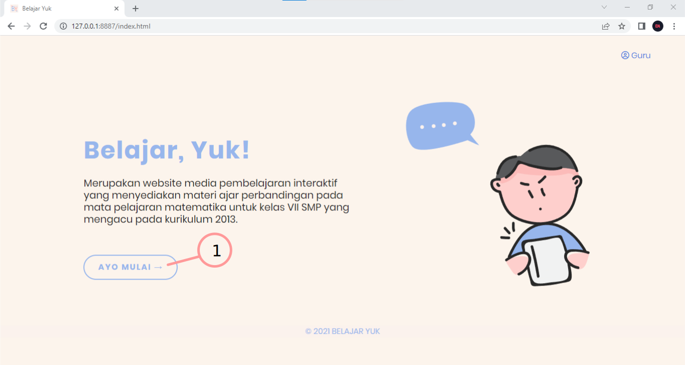
Jika ingin masuk ke menu utama, silakan klik tombol "AYO MULAI" pada lingkaran nomor 1 seperti yang terlihat pada gambar di atas.
- Setelah masuk di halaman menu utama, akan tersedia beberapa pilihan menu, yaitu; materi, evaluasi, KI & KD, dan informasi.
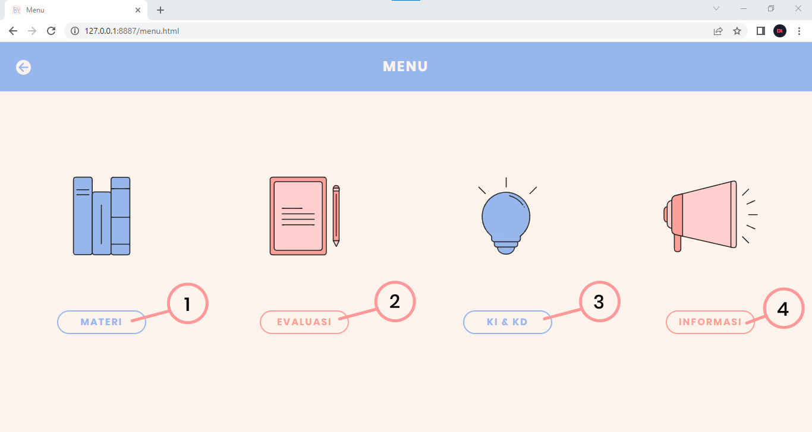
Jika ingin mempelajari materi dan berlatih, silakan klik tombol "MATERI" seperti yang terlihat pada lingkaran nomor 1 gambar di atas.
Lalu, jika ingin melatih kemampuan dengan mengerjakan soal-soal evaluasi, silakan klik tombol "EVALUASI" seperti yang terlihat pada nomor 2.
Jika ingin membaca bagian kompetensi dasar, kompetensi inti, dan peta konsep, silakan klik tombol "KI & KD" seperti yang terlihat pada lingkaran nomor 3.
Jika ingin mengetahui informasi tentang pengembang, petunjuk penggunaan, atau daftar pustaka, silakan klik tombol "INFORMASI" seperti yang terlihat pada gambar nomor 4.
- Sebelum masuk ke halaman materi, alangkah lebih baik jika kamu membaca bagian kompetensi dasar, kompetensi inti, dan peta konsep. Tujuannya, agar kamu tahu apa saja yang akan dipelajari pada materi tersebut.
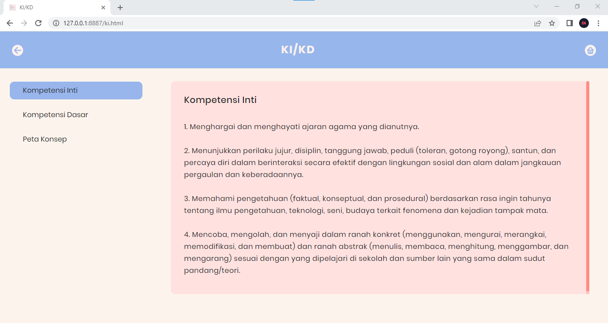
Gambar di atas adalah tampilan pada halaman kompetensi inti. Jika ingin berpindah ke halaman kompetensi dasar, silakan klik "Kompetensi Dasar" pada bagian sidebar, dan tampilannya akan seperti ini :
Lalu, jika ingin berpindah ke halaman peta konsep, silakan klik "Peta Konsep" pada bagian sidebar, dan berikut adalah tampilannya :
- Jika kamu ingin kembali ke menu utama, silakan klik tombol icon dilingkari pada gambar di bawah ini :
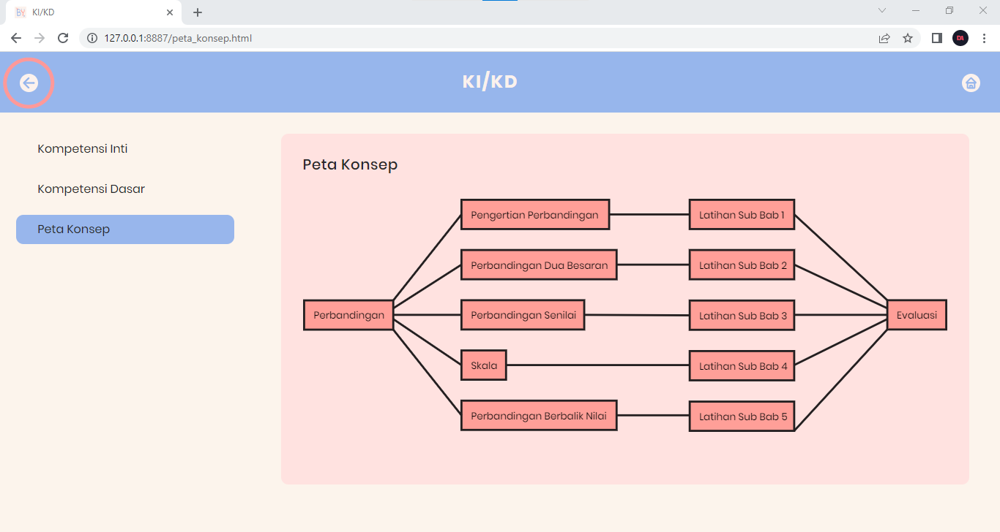
- Berikut adalah tampilan dari halaman utama materi :
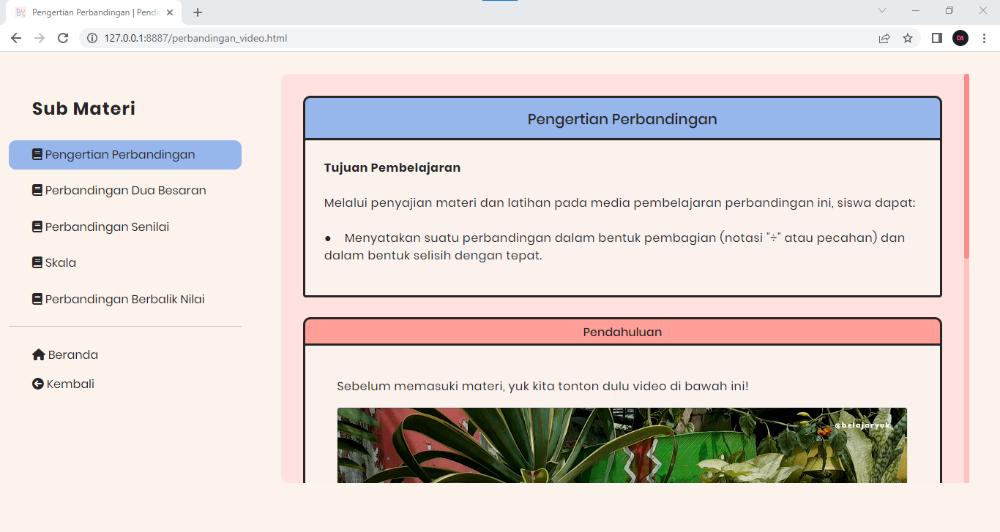
Halaman utama akan menampilkan sub bab pertama yaitu "Pengertian Perbandingan" dengan konten berupa tujuan pembelajaran dan pendahuluan yang tersaji dalam bentuk video, seperti yang terlihat pada gambar di bawah ini :
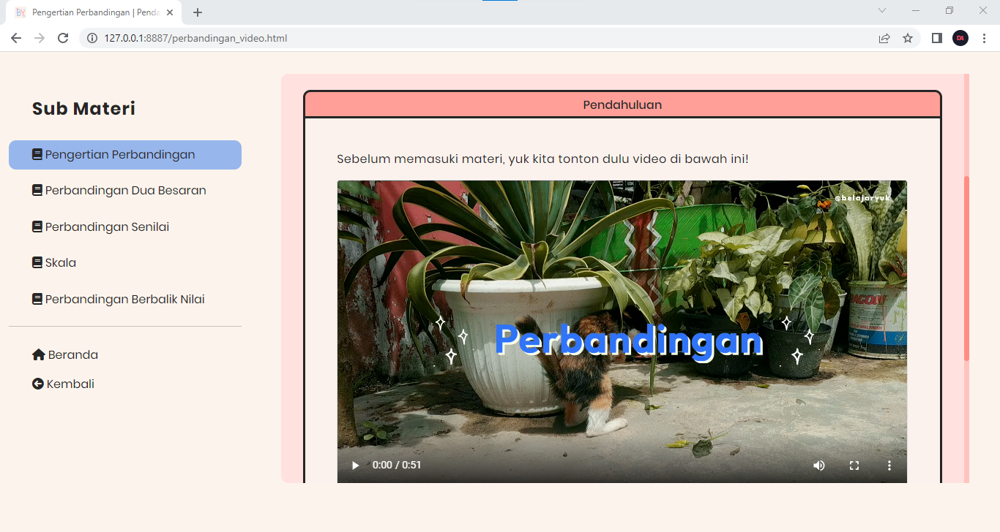
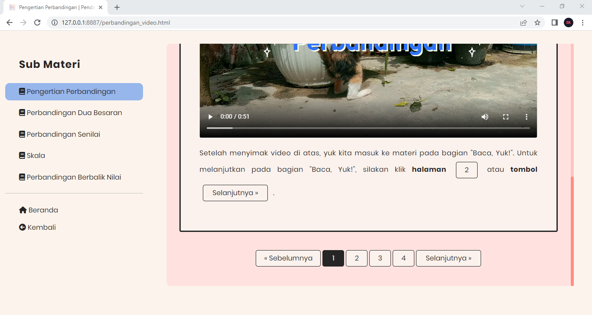
- Jika ingin berpindah ke halaman selanjutnya yaitu "Baca, Yuk!", silakan klik tombol "Selanjutnya" atau klik pada tombol halaman nomor "2" seperti yang terlihat pada lingkaran nomor 1 dan nomor 2 gambar di bawah ini :
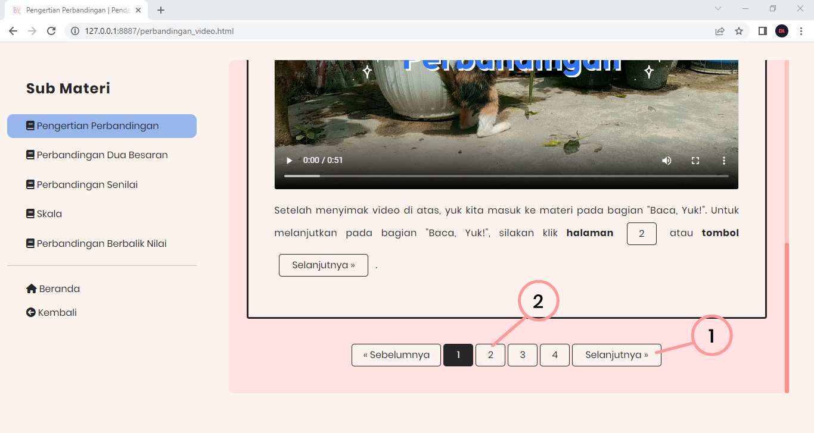
- Kemudian, jika kamu ingin melihat contoh soal, silakan berpindah ke halaman "Simak, Yuk!". Atau jika kamu ingin berlatih, silakan berpindah ke halaman "Coba, Yuk!" dengan cara klik pada tombol selanjutnya atau klik pada nomor halaman seperti yang sudah dijelaskan pada langkah nomor 6.
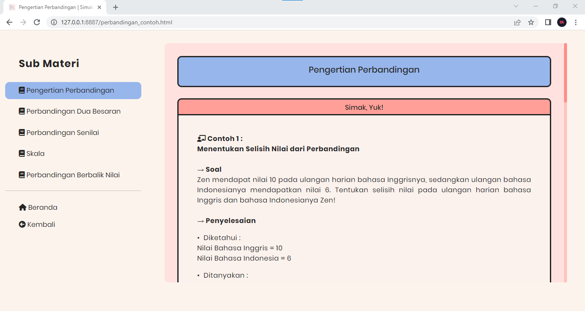
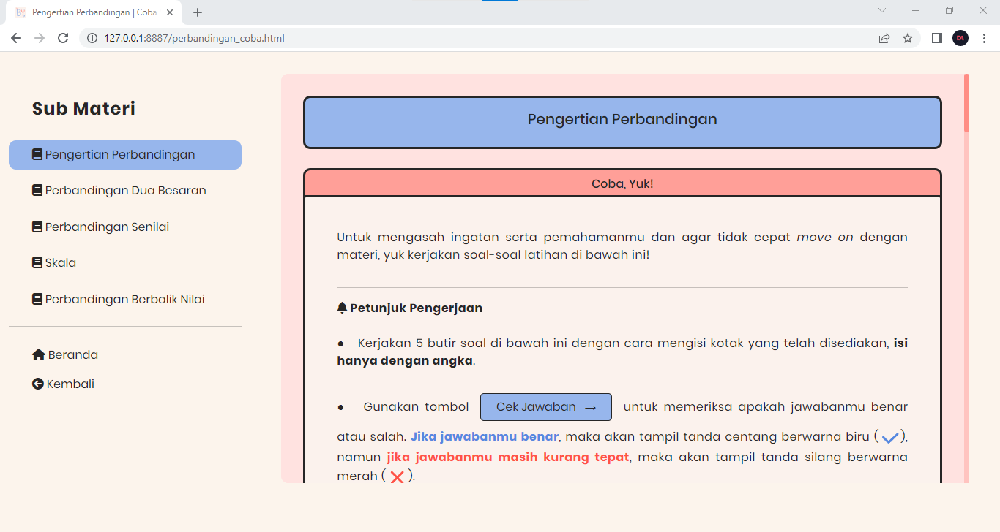
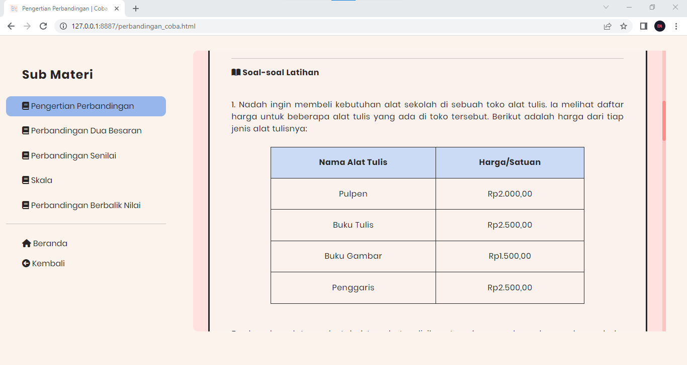
Jika ingin berpindah ke sub bab selanjutnya, kamu bisa klik pada pilihan materi yang terdapat pada bagian sidebar, atau klik pada tombol "Selanjutnya" pada halaman coba yuk.
- Setelah mempelajari materi, menyimak contoh soal, dan berlatih, silakan kembali ke menu utama dan klik tombol evaluasi untuk menguji kemampuanmu pada materi tersebut.
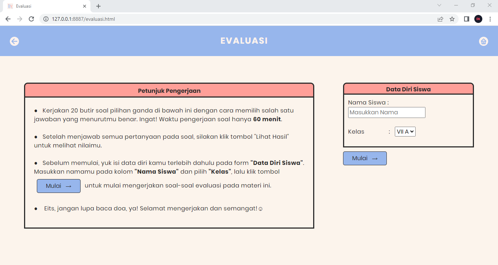
Silakan baca petunjuk pengerjaan dan isi data diri sebelum memulai mengerjakan soal evaluasi. Jika sudah, lanjutkan ke halaman soal evaluasi dengan cara klik pada tombol "Mulai" seperti yang terlihat pada gambar di bawah ini :
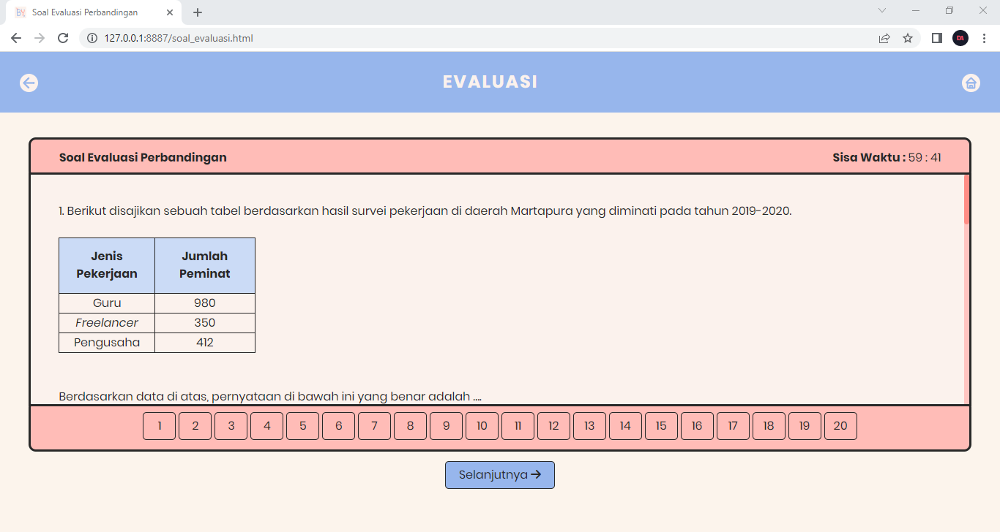
Selesaikan semua soal evaluasi, dan klik tombol "Selesai" untuk melihat perolehan nilaimu.
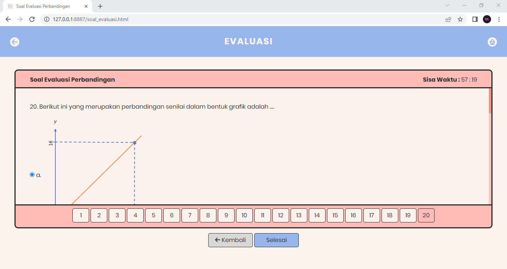
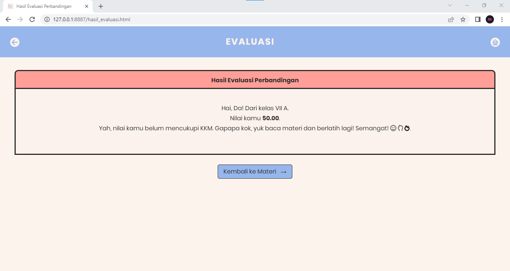
- Jika ingin mengetahui tentang media pembelajaran, pengembang, petunjuk penggunaan serta daftar pustaka, silakan kembali ke menu utama dan klik tombol "INFORMASI".
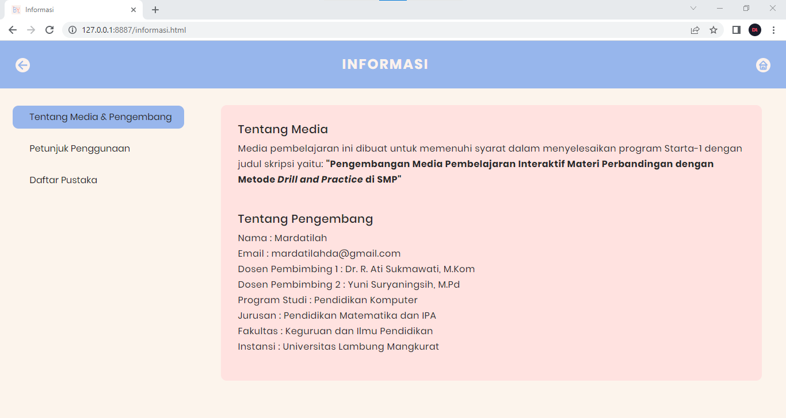